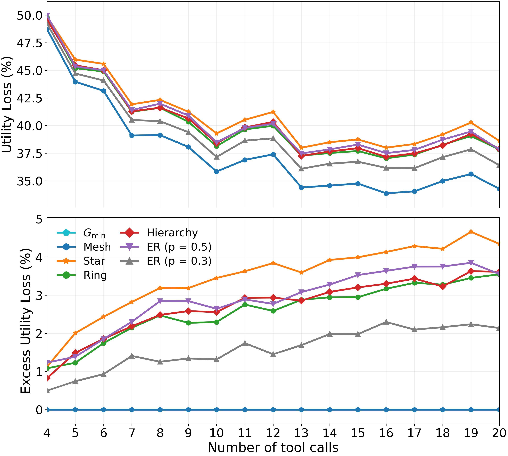
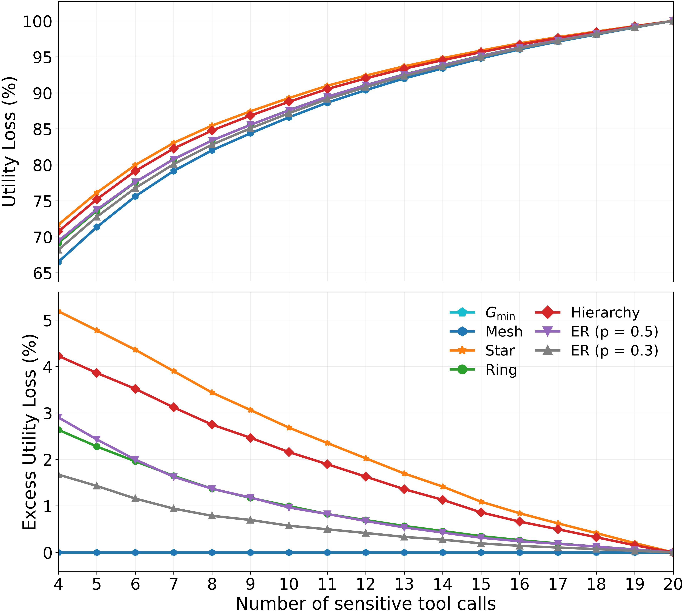
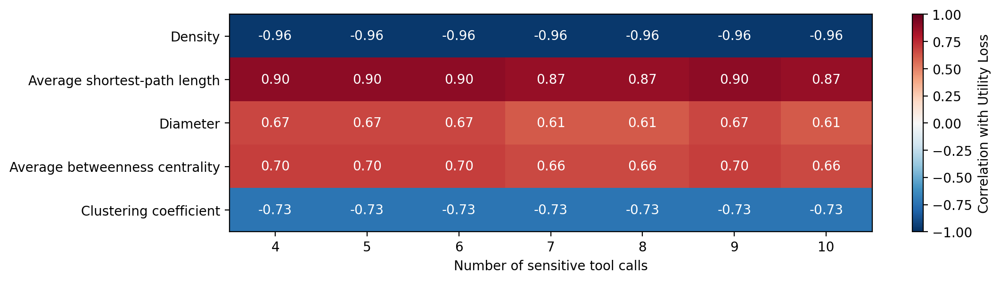
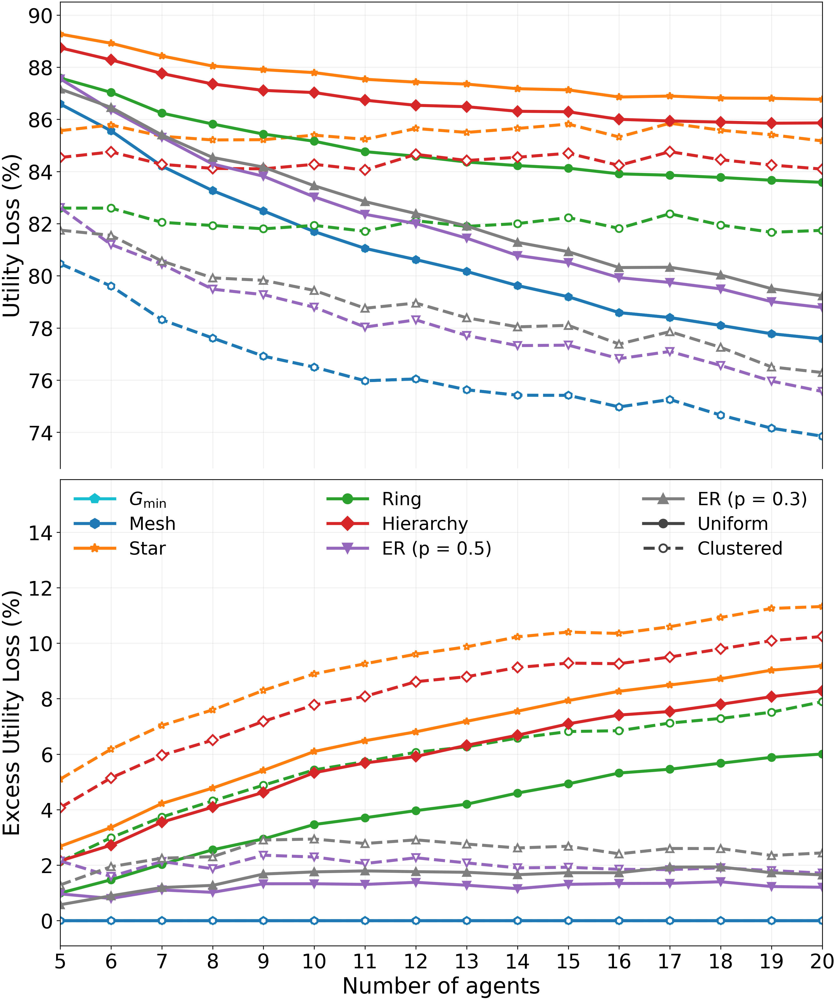
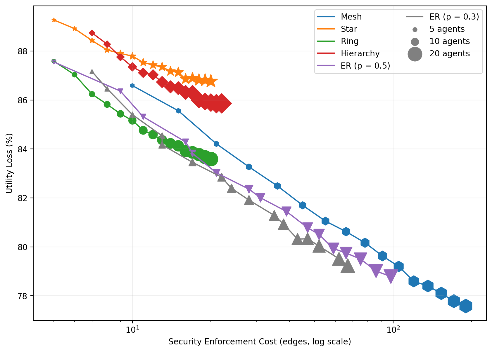

agent_ifc
Reference results for The Limits of Information-Flow Control Enforcement in Agentic AI Systems.
Figure 2 — Task complexity
PDF · SVG
Figure 3 — Labeling budget
PDF · SVG
Figure 4 — Spearman correlations
PDF · SVG
Figure 5 — Agent count and tool allocation
PDF · SVG
Figure 6 — Security–utility tradeoff
PDF · SVG